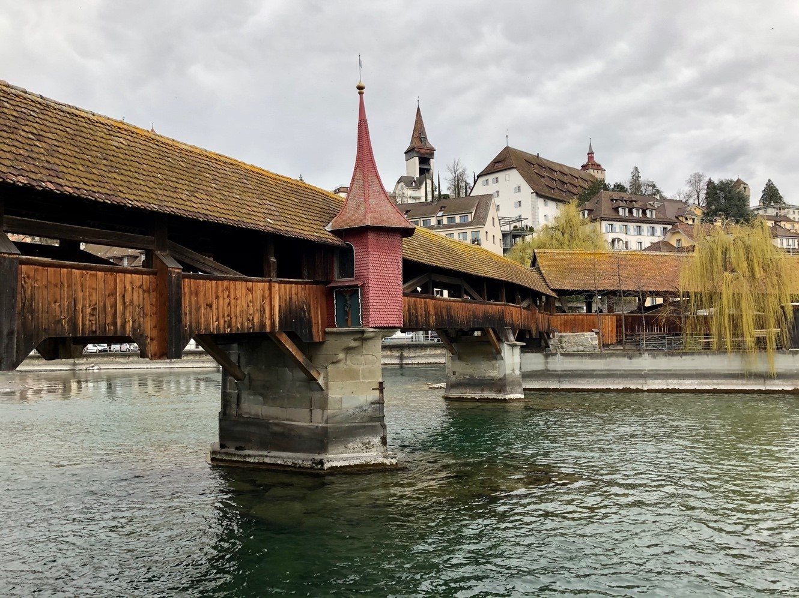
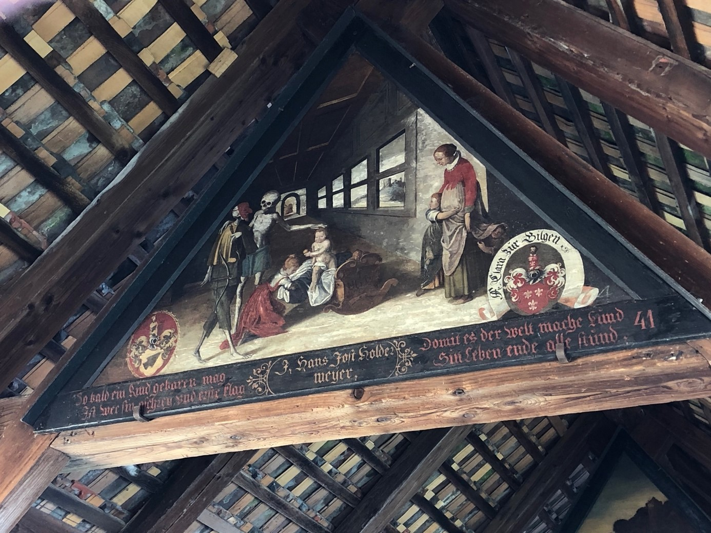
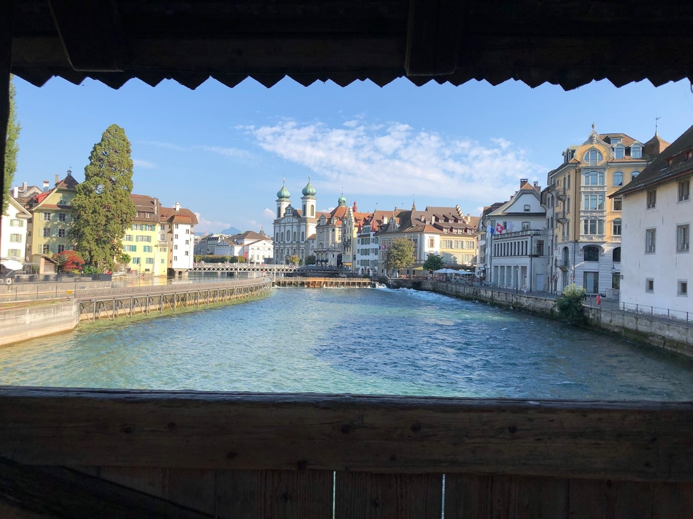

Rasten an der Reuss
Es ist ein heisser Dienstag im September, als elf angehende Pfarrer_innen ihre Rucksäcke im Historischen Museum in Luzern gegen einen Audioguide eintauschen. Viel erwarten sie nicht mehr von diesem Tag, der am Morgen eine Teufelssage auf dem Napf und eine Begegnung mit der Schwarzen Madonna in Luthernbad bereithielt. Im Schatten des mit Ornamenten gezierten Eingangs zum Herrenkeller hätte die Gruppe lieber pausiert, doch was dieser Ort zu erzählen hat, will gehört werden. Mittelalterliche Klänge dringen aus den Kopfhörern und dirigieren die Vikar_innen in eine andere Epoche. Was Menschen vor mehr als 650 Jahren nicht möglich war, wird heutigen Pilger_innen leicht gemacht: die Überquerung der Reuss. 1350 wurde der erste Teil der Spreuerbrücke fertiggestellt (ausgehend vom Mühleplatz am rechten Ufer zu den Wasserwerken im Fluss) und seit 1408 erschliesst die Brücke auch das linke Ufer mit dem ehemaligen Bäckerquartier rund um die Pfisterngasse. Wo laute Mühlen und rauschende Wasserkraftwerke einst die eine Uferseite prägten, erinnern heute nur noch Gemälde an die rege Nutzung durch das Müllershandwerk. Auf der linken Uferseite konnte glücklicherweise mehr Bausubstanz erhalten werden: Das Historische Museum und das Naturmuseum sind in das ehemalige Zeughaus und die Kaserne eingezogen. Kunst und Bildung prägen heute die vormals militärisch genutzte Umgebung der Spreuerbrücke.
Spreuerbrücke, Luzern (Bild: Nadja Straubhaar)
Bildreiche Übergänge
Damals wie heute ist nicht die Umgebung, sondern die gedeckte Holzbrücke von grösserem Interesse – besonders der Bilderzyklus, der im Giebeldach angebracht wurde. Dass aufwändige Bilder in Brücken zu finden sind, war zumindest für Luzerner_innen des Mittelalters und der frühen Neuzeit keine Besonderheit. Die Lage der Stadt an der Reuss nötigte die Städtebauer_innen zur Planung zahlreicher Brücken und so wurden die Hof-, die Reuss- und die berühmte Kapellbrücke seit ihrer Errichtung von Bildern geschmückt. En vogue waren Historienbilder, weshalb auch für die Spreuerbrücke bereits ein Konzept bestand. Über die Gründe, weshalb die Obrigkeit dem Maler Kaspar Meglinger (1595–1670) und seinen Mitarbeitenden den Auftrag gab, ausgerechnet einen Totentanz anzufertigen, kann spekuliert werden. Das erste Bild wurde um 1616 angebracht, die anderen 71 Bilder entstanden in gut zehn Jahren zwischen 1626–1637. Der Gang über die Brücke legt einen Gedanken nahe: Hier befindet sich vieles im Fluss, die Bretter unter den Füssen knarren und wer dazu noch weiss, dass manche dieser Balken bewusst lose eingelegt wurden, um den Abfall besser entsorgen zu können, kann sich ausmalen, dass sich manche der Fussgänger_innen hier fürchteten.
Totentanz, Kaspar Meglinger, Spreuerbrücke, Luzern (Bild: Tina Straubhaar)
Staunend den Tod der anderen betrachten
Die Symbolik von Brücken als Übergang zwischen Diesseits und Jenseits muss an diesem Ort weder sonderlich bemüht noch ausgereizt werden. Die Nähe unterschiedlicher Sphären war der Spreuerbrücke lange selbst eigen: So markierte sie während vielen Jahrhunderten den Übergang zwischen trinkbarem Wasser, das rein und lebensspendend war, und Schmutzwasser, das potentiell Krankheit und Tod mit sich brachte. Von dieser Bestimmung, wonach Laub, Spreu und tote Tiere nur unterhalb der Spreuerbrücke in die Reuss geworfen werden durften, stammt auch der Name der Brücke. Die Bedeutung der Brücke veränderte sich mit dem Rückgang der Wichtigkeit der Mühlen, sie war nicht mehr hauptsächlich Zulieferungsweg von Korn und Getreide, sondern wurde vermehrt für Spaziergänge genutzt. Es fällt leicht, sich die Menschen vorzustellen, die die Bilder des Totentanzes ebenso aufmerksam beobachteten wie die elf Vikar_innen dies mit der deutenden Stimme des Guides im Ohr tun.
«Hier gab es viel Leben, denn es gab auch viel Tod.»
Auffällig ist, mit welcher Leichtigkeit, mancherorts fast irritierenden Fröhlichkeit der Tod dargestellt wird. Die Bilder orientieren sich in der Abfolge an den Lebensaltern der Menschen und hängen danach mehrere Tafeln mit den Ständen an. Schrecklich wirkt der Tod hier selten. Das mag am schon ursprünglich eher plakativen Stil der Künstler_innen um Meglinger liegen, die sich an Motiven des Malers Hans Holbein d. J. (um 1497/98–1543) orientierten und diese recht frei komponierten und erweiterten. Da der Bildzyklus dem Wetter ausgesetzt ist, musste jede Generation mindestens einmal pro Saison die Gemälde restaurieren. Diese konservatorisch nötigen Schritte haben das ursprüngliche Bildmaterial stark beeinflusst. Doch auch abzüglich dieser Gründe bleibt der Eindruck, wonach dieser Totentanz an Dringlichkeit gegenüber anderen Totentänzen eingebüsst hat: Der Tod, wie er hier künstlerisch dargestellt wird, wirkt, als würde er in seinem Schrecken heruntergespielt werden. Ob die Maler_innen diesen Stil bewusst wählten, um den Tod gewissermassen ins Leben zu integrieren, indem sie ihn als Nebendarsteller und Mitspieler zeichneten statt als Zerreisser und Zerstörer?
Blick von der Spreuerbrücke auf die Stadt und Jesuitenkirche, Luzern (Bild: Tina Straubhaar)
Vergänglich, vergänglich, alles ist vergänglich
Die Beobachtung, dass der Tod das Leben begleitet, bringt zusammen mit einem der Verse unterhalb der Bildtafeln ein biblisches Vorbild ins Spiel: das alttestamentliche Weisheitsbuch Kohelet. Manche Forschende gehen soweit, das Buch Kohelet als «biblische Hauptquelle des Spreuerbrückenzyklus» anzunehmen. Dafür sprechen die Gegenüberstellungen von fröhlich-festlichen Momenten und schmerzlich-schwierigen auf den Bildtafeln, die unschwer mit dem «Alles hat seine Zeit» aus Kohelet 3 in Verbindung gebracht werden können. Der Verzweiflung und dem Irrlauf des Nichtigen werden Annahme und Genuss gegenübergestellt. Die Akzeptanz scheinen auch die Erschaffer_innen des Bildzyklus im Blick gehabt zu haben, als sie die Bilder malten, die den Tod als wenig bedrohliches Gegenüber der Lebenden darstellt. Dass die Vergegenwärtigung des Todes je nach Situation des betrachtenden Menschen gänzlich anders gefärbt ist, muss auch für die Spreuerbrücke angenommen werden: Während Mitglieder von patrizischen Familien wohl in heiterer Stimmung sich selbst oder andere bekannte Luzerner Bürger_innen erblickten, wird die Stimmung der Magd, die im Schutz der Dunkelheit und übertönt vom Lärm der Mahlwerke ihr uneheliches Kind gebar und in die Reuss warf, von Tönen der Verzweiflung geprägt gewesen sein. «Vergänglich, vergänglich, alles ist vergänglich» steht in Anlehnung an Kohelet unter einer der Bildtafeln. Der Verfasser des Koheletbuchs entwickelt einen Umgang mit der Vergänglichkeit menschlichen Lebens, der um die Anfälligkeit der Existenzen weiss. Ob diese Haltung Trost oder Vertröstung in den Augen der Betrachter_innen auslösen, können diese nur je für sich selbst beantworten. Gewiss ist, dass nicht nur angesehene Patrizier_innen das Schlendern über die Brücke genossen, sondern auch heutige Pilger_innen und andere Reisende in Luzern gut bedient sind: Wer den Anweisungen des Guides folgt, macht am Brückenkopf kehrt, bestaunt die zweite Hälfte des Zyklus und wird im alten Zeughaus in die Gegenwart und zum Anstossen an die Bar geführt: «Auf die Lebenden und auf die Toten»!
Sina von Aesch ist Doktorandin und Assistentin am Institut für Historische Theologie an der Universität Bern.
Weitere Artikel von {{author.author}} finden Sie hier:
Zur Vertiefung:
- Josef Brülisauer, Claudia Hermann, Historisches Museum Luzern, Die Spreuerbrücke in Luzern. Ein barocker Totentanz von europäischer Bedeutung, Luzern 1996.
- Rudolf Paul Dreier, der Totentanz. Ein Motiv der kirchlichen Kunst als Projektionsfläche für profane Botschaften (1425–1650), Rotterdam 2010.
- Hans Georg Wehrens, Der Totentanz im alemannischen Sprachraum. «Muos ich doch dran – und weis nit wan», Regensburg 2012.
Weitere Hinweise:
Der Audioguide ist erhältlich im Historischen Museum Luzern: www.historischesmuseum.lu.ch
Es können geführte Touren mit einer Schauspielerin gebucht werden: www.historischesmuseum.lu.ch/theater/Theatertouren/Theatertour_Der_Totentanz
Der Beitrag zum Berner Totentanz findet sich hier.